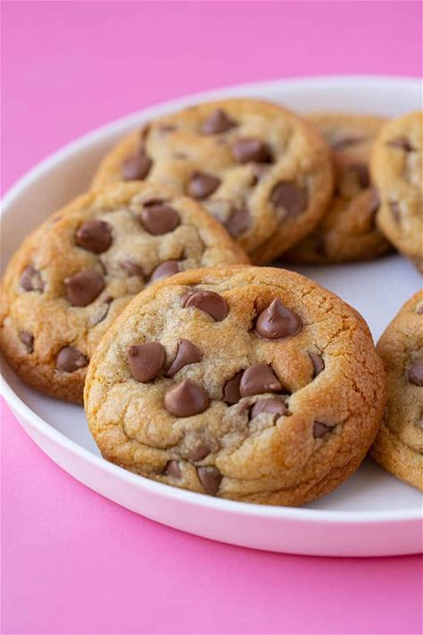

Chocolate Cookie Recipe

Description:
These chocolate cookies are a chocolate lover’s dream, with a rich center
and a slightly crisp exterior.
Perfectly balanced between sweet and decadent, they are sure to satisfy
any chocolate craving.
Ingredients
- 1 cup unsalted butter, softened
- 1 cup granulated sugar
- 1 cup light brown sugar, packed
- 2 large eggs
- 2 teaspoons vanilla extract
- 2 cups all-purpose flour
- 1 cup unsweetened cocoa powder
- 1 teaspoon baking soda
- 1/2 teaspoon salt
- 2 cups chocolate chips
Steps:
-
Preheat the Oven: Preheat your oven to 175°C (350°F).
Line baking sheets with parchment paper.
-
Cream the Butter and Sugars: In a large bowl, cream
together the butter, granulated sugar, and brown sugar until light and
fluffy.
-
Add the Eggs and Vanilla: Beat in the eggs one at a
time, then stir in the vanilla extract.
-
Combine Dry Ingredients: In a separate bowl, whisk
together the flour, cocoa powder, baking soda, and salt. Gradually blend
this into the butter mixture.
-
Add the Chocolate Chips: Fold in the chocolate chips
until evenly distributed.
-
Shape the Cookies: Drop rounded spoonfuls of dough onto
the prepared baking sheets, spacing them about 2 inches apart.
-
Bake: Bake for 10-12 minutes, or until the edges are
set but the centers are still soft. Allow the cookies to cool on the
baking sheets for a few minutes before transferring to wire racks to
cool completely.
-
Serve: Enjoy these chocolate cookies with a cold glass
of milk or a scoop of vanilla ice cream for an extra treat.
Enjoy baking and indulging in these delightful chocolate cookies! If
you have any questions or need more tips, feel free to ask.
Back to homepage